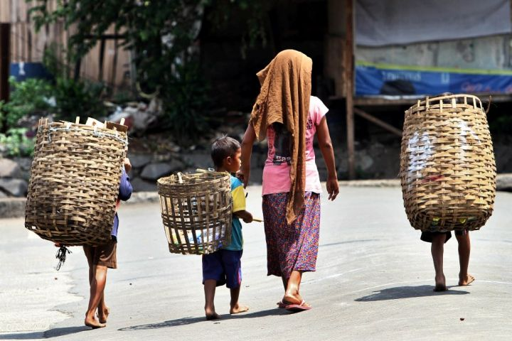

Saat ini menurut data badan Pusat Statistik (BPS), angka kemiskinan Indonesia berada di 8,47% atau sekitar 23, 85 juta penduduk. Angka ini menunjukkan adanya penurunan dibandingkan beberapa tahun terakhir, hasil ini membuktikan bahwa upaya pemerintah seperti bantuan sosial, peningkatan akses pendidikan, mulai memberikan dampak dalam membantu masyarakat menjadi lebih baik. Tetapi dengan hasil yang menurun tidak membuktikan bahwa angka kemiskinan di Indonesia sudah membaik. Kemiskinan di pedesaan, masih lebih tinggi dibanding di perkotaan. Hal ini membuat masyarakat yang ada di daerah terpencil atau setiap harinya berpenghasilan kurang masih menghadapi kesulitan ekonomi. Selain itu, adanya inflasi dengan kenaikan harga bahan pangan dan pajak yang terus meningkat, membuat banyak dari masyarakat yang lemah kesulitan untuk memenuhi kebutuhan dasar mereka.
Dalam mengurangi angka kemiskinan, pemerintah melakukan aksi bantuan sosial seperti Program Keluarga Harapan (PKH), Bantuan Pangan Non-Tunai (BPNT), Bantuan Langsung Tunai (BLT). Program ini tidak hanya memberikan bantuan dalam bentuk uang. Tetapi ada juga yang membantu masyarakat dalam mengakses pendidikan dan meningkatkan keterampilan. Singkatnya, dengan ini pemerintah tidak hanya memberikan bantuan untuk memenuhi kebutuhan sehari-hari. Tetapi juga memberikan peluang bagi masyarakat untuk keluarga dari kondisinya saat ini dan meningkatkan kualitas hidupnya. Selain memberikan peluang, pemerintah juga mendorong masyarakat untuk memanfaatkan peluangnya melalui pelatihan keterampilan, membuat/mengembangkan usaha, dan memulai bisnisnya sendiri. Hal ini bertujuan agar masyarakat, tidak terlalu bergantung pada bantuan, tetapi juga dapat meningkatkan penghasilannya secara mandiri.
Dengan dukungan pemerintah, di samping itu masyarakat juga mempunyai peran penting untuk mengurangi angka kemiskinan. Peran aktif masyarakat, organisasi tentunya sangat berpengaruh dalam mengurangi kemiskinan. Mereka dapat membantu melalui penyediaan pelatihan atau memberikan peluang pasar/kerja bagi masyarakat yang ingin mengembangkan usahanya. Dukungan ini, tidak hanya membantu masyarakat dalam memenuhi kebutuhan sehari-harinya. Tetapi memberikan peluang dan bantuan bagi masyarakat yang ingin berkembang serta berubah untuk meningkatkan kualitas hidupnya secara mandiri.